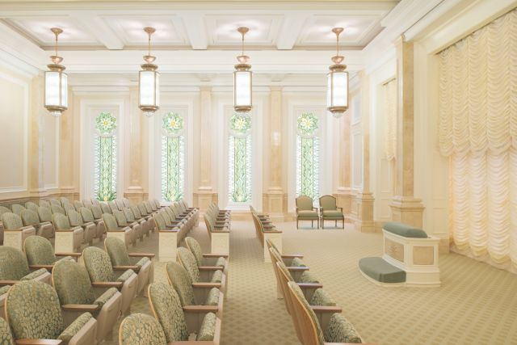

I'll cov'nant with my Father;
I'll promise to obey.
Entryway in the Haiti Temple
Waiting Room in the Oakland Temple
Baptistry in the Salt Lake Temple
Confirmation Room in the Meridian Idaho Temple

Chapel in the Oakland California Temple
Instruction Room in the Fort Lauderdale Florida Temple

Instruction Room in the Gilbert Arizona Temple
Instruction Room in the Rome Italy Temple
Bride's Room in the Rome Italy Temple
Celestial Room in the Hartford Connecticut Temple
For the temple is a holy place
Where we are sealed together.

As a child of God, I've learned this truth:
A fam'ly is forever.
The entire song: